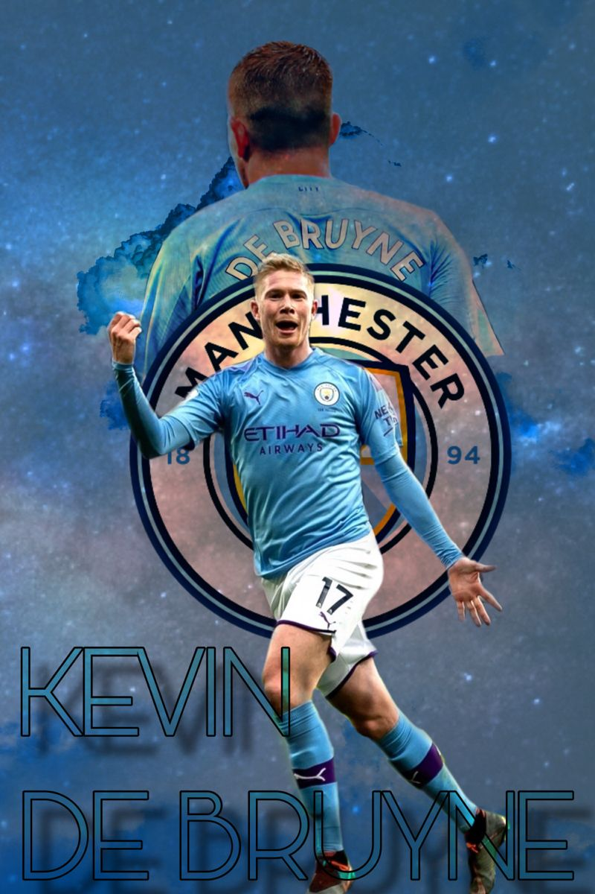

Kevin De Bruyne (born 28 June 1991) is a Belgian professional footballer who plays as a midfielder for
Premier League club Manchester City and captains the Belgium national team. He is widely regarded as one of
the best players of his generation as well as one of the best midfielders in the world. Pundits often
describe him as a complete footballer.
On 30 August 2015, Manchester City announced the arrival of De Bruyne on a six-year contract, for a reported
club-record fee of £55 million (€75 million), making him the second most expensive transfer in British
football history after Ángel Di María's move to Manchester United in 2014. He made his debut for the
team in the Premier League on 12 September against Crystal Palace, replacing the injured Sergio Agüero in
the 25th minute. On 19 September, he scored his first goal for the club against West Ham United in first
half stoppage time in an eventual 2–1 loss. He went on to score in a 4–1 League Cup win against
Sunderland, on 22 September and a 4–1 loss to Tottenham Hotspur in the Premier League on 26
September.On 3 October, he scored in the team's 6–1 win against Newcastle United.

On 10 September 2016, De Bruyne scored and assisted in the first Manchester derby of the season which City
won 2–1 and was awarded the Man of the Match. On 17 September 2016, De Bruyne was awarded the Man of the
Match, in a 4–0 win over Bournemouth. De Bruyne scored the first, assisted the fourth, and provided key
passes on both the second and third goals. After the international break, Manchester City drew their
next game, against Everton, played on 15 October 2016 with the scoreline finishing at 1–1. Agüero and De
Bruyne both missed their penalties while Nolito came off the bench to equalise for City.
De Bruyne set up both Agüero's and Gabriel Jesus' goals, on 9 September 2017, in a 5–0 home victory over
Liverpool. On 16 September, De Bruyne assisted Agüero for his first goal in an eventual 6–0 win over
Watford. On 26 September, De Bruyne scored his first goal of the 2017–18 season in a 2–0 win over
Shakhtar Donetsk. On 30 September 2017, he scored his first goal of the 2017–18 Premier League season,
as City beat his former club Chelsea with a 1–0 scoreline at Stamford Bridge. On 14 October, De Bruyne
provided two assists in a 7–2 win over Stoke City. On 5 November, De Bruyne scored in a 3–1 win over
Arsenal. On 18 November, he scored in a 2–0 away win over Leicester City. On 29 November, he scored
City's opener and assisted Raheem Sterling's last-minute winner in a 2–1 win over Southampton.

On 26 April 2023, De Bruyne scored a brace and provided an assist in a 4–1 win over Arsenal, which reduced
their rival's lead at the league table to two points, with his team had two games in hand. On 9 May, he
scored the equalizer for his club in a 1–1 away draw against Real Madrid in the Champions League semi-finals
first leg, in which he managed to score in the same round for the third consecutive year.

On 10 June, he played only 36 minutes in his second Champions League final, as he suffered a hamstring
injury and was replaced by Phil Foden. However, Manchester City eventually won 1–0 against Inter Milan,
which completed their continental treble.